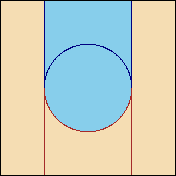
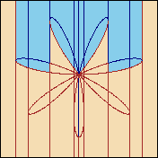

Real quantifier elimination traditionally refers to eliminating quantified variables from Tarski formulas, which are boolean combinations of polynomial equalities and inequalities. The atomic formulas in a Tarski formula in the variables x1, ..., xk have the form f(x1, ..., xk) s g(x1, ..., xk), where f and g are polynomials with integer coefficients and s is one of the relational operators >,<,=,/=,>=,<=. Sets that are definable by Tarski formulas are called semi-algebraic (if F(x1, ..., xk) is a Tarski formula it defines the subset of Rk consisting of all points a such that F(a) evaluates to true). QEPCAD accepts a slightly larger language than simple Tarski formulas, a language we refer to as Extended Tarski formulas. The extended language still defines exactly the semi-algebraic sets, but it allows some sets to be described more easily than is possible with plain Tarski formulas, and this can translate into more efficient computation for QEPCAD.
The language of Extended Tarski formulas (ETFs) is defined in Chapter 7 of my thesis, and it is shown that we can perform quantifier elimination in this language using CADs - in fact it isn't really different than quantifier elimination for Tarski formulas using CADs. That chapter also formally defines the class of Restricted ETFs and this language, which is still a superset of the language of Tarski formulas, is the language of input and output formulas in QEPCAD. Here we only give an informal definition.
The language of Restricted ETFs extends the language of Tarski formulas by allowing atomic formulas of the form xk s rootjf(x1, ..., xk), where f is a polynomial with integer coefficients, j is a nonzero integer, and s is one of the relational operators >,<,=,/=,>=,<=. The truth of this atomic formula at the point (a1,...,an), where n >= k is false if the polynomial f(a1,...,ak-1,xk) has fewer than k distinct real roots, and is otherwise given by ak s b, where b is the |j|th root of f(a1,...,ak-1,xk) ordered from smallest to largest if j > 0 and largest to smallest otherwise. Remember that in a CAD construction problem there is an assumed order to the variables of xa < x2 < ... < xk. That order is a part of this definition!
[ x2 > _root_1 x1^2 + x2^2 - 1 ] |
 | A simple example in the extended language - the cells colored blue are in the set defined by the formula |
[ x2 > _root_-2 (x1^2 + x2^2)^4 -
7 x1^6 x2 + 35 x1^4 x2^3 -
21 x1^2 x2^5 + x2^7 ] |
 | Sometimes the sets defined by indexed root expressions are a bit odd! |